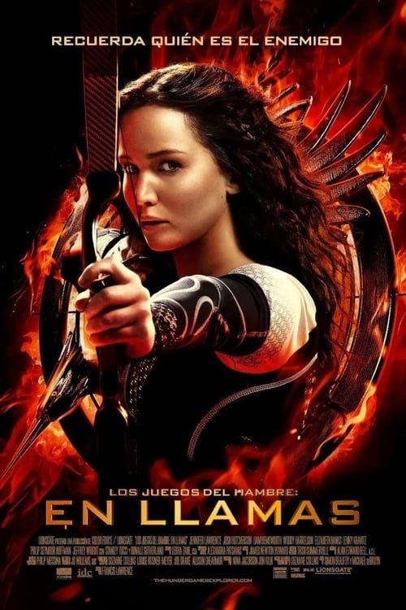

Los Juegos del Hambre: En llamas (2013)
Sinopsis Rápida
Tras su victoria en los Juegos del Hambre, Katniss se enfrenta a una nueva amenaza: la furia del Capitolio y una rebelión latente que la convertirá en el símbolo de una revolución inesperada.
Sinopsis Detallada
La aparente victoria de Katniss y Peeta en los 74º Juegos del Hambre es solo el comienzo de una lucha mucho más grande. Su gira de la victoria por los distritos revela la creciente insatisfacción y el peligro de una rebelión en ciernes contra el opresivo Capitolio. El Presidente Snow, con su implacable sed de poder, orquesta los 75º Juegos, un macabro 'Vasallaje de los Veinticinco', con una regla despiadada que pone en riesgo a aquellos que Katniss más ama. La película explora las consecuencias de su audacia y la creciente presión que debe enfrentar para proteger a sus seres queridos en una sociedad brutal y desesperada.
¿Por qué tenés que verla?
- Una secuela que intensifica la acción y la tensión política de la primera entrega.
- La actuación de Jennifer Lawrence brilla aún más en esta entrega, mostrando la evolución y el sufrimiento de Katniss.
- Su impacto cultural como parte de una saga que cuestiona las estructuras de poder y la opresión.
- Explora temas de supervivencia, valentía y la lucha por la libertad.
Idea Extra
Análisis comparativo de la adaptación cinematográfica con la novela original, destacando las diferencias y sus implicaciones en la narrativa.